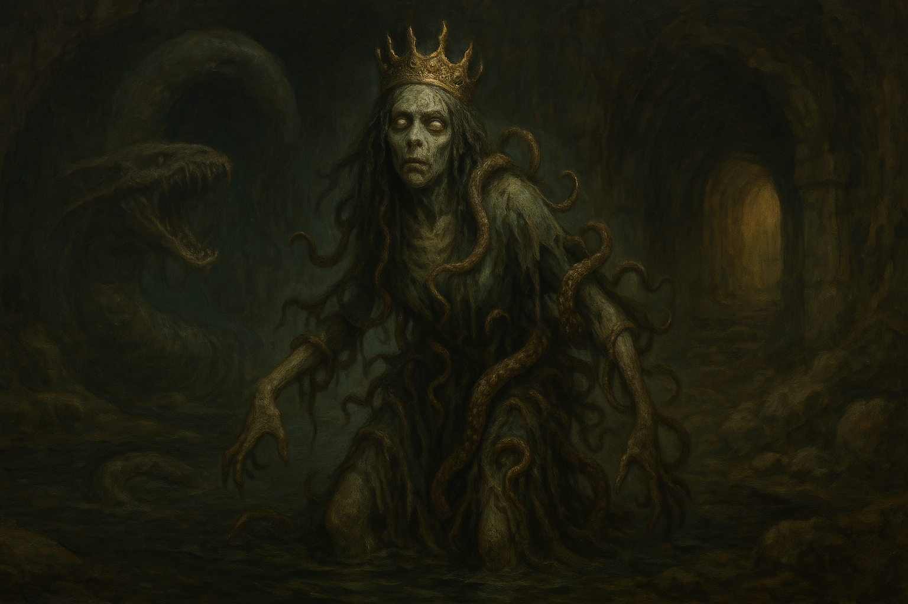

Chapter 2: Evangelist of Phynoir
The Cave of Drogsland


The Cave of Drogsland
15051.05.10
與怪物的激戰過後，冒險者們稍作休息。同時，羅特陷入了一陣恐慌。在過去夥伴們犧牲的事件後，羅特對觸肢等孽物般的特徵，便有非常不舒服的反應，因此當身上爬了三隻孽物的GoR和因興奮與好奇而變身為眼怪的烏巴都在他所屬的團隊內，再加上一口氣與四隻孽物作戰（儘管隱形的羅特幾乎沒有真正參與到戰鬥），這對他來說，都已經太多了。
趁著還隱形的狀態，羅特趕緊躲到了附近的角落。他拿起拉里爾教他吹的笛子，不顧會暴露自己的行蹤，悠悠的吹了起來。音樂響起，曲終，妖精的魂魄飄了出來。儘管在過去這段日子，羅特總會在夜深人靜時，偷溜到夥伴視線以外的地方，偷偷吹笛子，但其實烏波都有發現。妖精的魂魄和羅特來回著話語，羅特抱怨著太多的孽物讓他感到不適，但又知道自己該忍下來。如同日常對話的內容，就好像羅特已經忘了自己和團隊們正在漆黑潮濕的地洞內一樣。
聽見羅特的笛子聲和對話聲，幻化成眼怪的烏波飄著，找到了羅特的位置，好奇的GoR也派了自己的孽物前去好好安慰羅特，而這些當然也讓羅特更多恐慌與喪志。妖精魂魄趁著羅特無暇顧及自己時，迅速鑽回了笛子內。
在深淵語、惡魔語與普通語的夾雜下，現場如派對一般，嘈雜的同時，大多數內容……多數人其實都聽不懂。
冒險中就得繼續，因此大家狀況稍微穩定些後（在休息期間，賽柏也幫看起來快要不行的GoR做了簡單的治療），準備繼續探洞。GoR讓自己的三隻小孽物跟隨著烏波走，而三隻小孽物也像是找到了大哥一般，十分開心（又盲目）的跟隨著。
烏波、庫登和賽柏來到了地圖上GoR標記有「水」的空間，看見了在岩壁旁似乎有道小水溝，通往其他地方。然而，因為洞口太小，烏波沒辦法通過，只有其中一隻小孽物鑽了進去，但好一陣子，還是都在黑暗之中，並沒有辦法從洞內鑽到外面或是其他空間，因此作罷。
同一時間，還在失神狀態的羅特，在（身邊沒有小孽物的）GoR陪伴下，走到了其他較為安全的空間內，暫時休息著，直到精神稍微回復後，再去與其他夥伴會合。
探索了幾個空間，烏波等人也遇到了陷阱，但在小心謹慎的前提下，大家避開並解除了陷阱，繼續探險。
不久後，冒險者們似乎聽見了從他們下來的空間那兒，傳來了腳步聲。大家嘗試追上腳步聲，卻不見人影。跟隨著腳步聲移動的方向，他們發現其中幾扇門竟然是鎖著的。在羅特的專業下，多數的門都順利地被打開了，但偶爾還是有幾扇門較有蹊蹺—但在GoR說話之前，烏波早已將門轟開，大家有就沒有障礙的繼續往前走了。當然也有些門是轟不開的，GoR依照記憶，摸索到了石頭門邊的按鈕，輕輕一按，門就滑開了，烏波也就興奮地繼續向前衝了。
來到了最後能聽到腳步聲的空間，冒險者們看見了在湖水中沈睡的一頭怪物：那頭怪物有著長長的身體，滿口的利齒，以及多而長的附肢。GoR見過牠，也知道只要不打擾他，不會有事。冒險者們小心繞過怪物沈睡的湖邊，走到其他的出入口：而其中有個隱藏的門，竟然是GoR過去探洞時沒注意到的入口！
冒險者們在羅特將門打開後，走入一條又長又窄的廊道，只能容得下一個人的寬度。小心走著，走到前方後，是一扇金屬門，與地洞內十分不搭。門內似乎傳來了一個熟悉的女聲，說著他清楚，而且願意，緊接著則是這名女子的淒厲尖叫聲。
推開門後，冒險者們走進了一個像是診間的地方。一名貌似「護士」的孽物，彷彿不在意他們的存在，自顧自地在診間內移動，走到醫務櫃內找尋工具，不久後便先走回了廊道內。
冒險者們基於好奇，到了診間深處拉上布簾的空間。布簾拉開後，他們看見病床上躺著的，是當天早上還在酒館內服務他們的伊娃，面色蒼白，似乎已經昏厥了。更重要的是，在他頭上的，是一頂王冠，樣貌與羅特從雇主手上拿到的樣子一模一樣。
冒險者們趕緊從伊娃頭上摘下王冠，卻也發現伊娃的頭上留有像被牙齒咬過的血痕，鮮血不斷泌出。冒險者們趕緊用診間內現有的材料，為伊娃簡單包紮。
同一時間，烏波巡視了診間內的書籍，找到了其中一本令他感到有興趣的書：《芬諾爾傳道士製作手冊》，於是將它收了起來。
大家準備離開，但GoR對於把躺在病床上的伊娃留在原地，感到十分糾結。在來到卓茲蘭後，GoR每日都住在寂靜酒館，每天看著新婚的伊娃和雅各為大家服務著，因此心中滿是糾葛。但為了團隊，他還是將這樣的情緒暫時拋在腦後，大家趕緊衝出診間，往廊道內走。
廊道的盡頭，門一打開，便看見了「護士」迎面而來。雖然沒有任何攻擊態勢，但他渾身散發著不安的氣息，冒險者們盡可能地避開，讓他能好整以暇地穿越廊道。
走回有怪物的空間，冒險者們小心翼翼的靠著牆邊走，然而最後剩下烏波，因為沒有注意，驚醒了湖中的怪物。怪物顯然對烏波抱有一定程度的興趣，甚至作勢要襲擊他。
一來一回，時間滴滴答答過去，廊道的門再度被開啟。先前躺在病床上的伊娃，已站了起來，步履蹣跚的朝著烏波的方向前進，此刻的他雖然還能稱得上有著人的輪廓，但呆滯的眼神、觸肢爬滿的身軀，早已和冒險者們見過可人的酒館新婚太太完全不同了。伊娃口中呢喃著，用著月神的語言不斷讚美著，卻似乎不帶有什麼情緒。
為了避免和伊娃或怪物的戰鬥，冒險者們千方百計，儘速逃離這個空間，烏波也在危險之際成功逃走。
透過庫登製造的次元門，冒險者們迅速傳送到了不遠處他們已知的洞穴空間內，暫時得以喘一口氣。
而此時，只出一張嘴的卓茲克爵士又說話了，內容當然都是一些風涼話。庫登也只能隨性聽著，思索著下一步該怎麼走。
該拿到的寶物已到手，任務可以算是完成了。接下來只需要離開這座洞穴，就能把寶物交給委託人，拿到承諾的錢了。羅特如此想著。
而在GoR心中，他回想起昨晚做的夢，那個戴著王冠尖叫的面容，似乎與他今日所見雷同。預知的夢……是否對解開孽物的詛咒有所幫助呢？
15051.05.10
After the fierce battle with the monster, the adventurers took a short rest. Meanwhile, Lott went into a fit of panic. After the sacrifice of his companions in the past, Lott had a very uncomfortable reaction to monster-like features such as tentacles. Therefore, when GoR, who had three monsters crawling on his body, and Ubba, who turned into an eye monster due to excitement and curiosity, were both in his team, plus fighting four monsters at once (although the invisible Lott almost did not participate in the battle), this was already too much for him.
While still invisible, Lott hurriedly hid in a nearby corner. He picked up the flute that Ra’Leer taught him to play, and started playing it leisurely, regardless of exposing his whereabouts. The music started and the song ended, and the spirit of the goblin floated out. Although in the past days, Lott would always sneak out of the sight of his friends in the dead of night and play the flute secretly, but in fact Ubbo has discovered it. The spirit of the goblin exchanged words with Lott. Lott complained that too many evil things made him feel uncomfortable, but he knew that he should endure it. Just like the content of daily conversations, it was as if Lott had forgotten that he and his team were in a dark and damp cave.
Hearing the sound of Lott's flute and conversation, Ubbo transformed into a strange-eyed floating creature and found the location of Lott. The curious GoR also sent his own evil creature to comfort Lott, which of course made Lott even more panicked and dejected. The goblin soul quickly got back into the flute while Lott had no time to take care of itself.
With the mixture of the Deep, demonic and ordinary languages, the scene was like a party. It was noisy and at the same time, most of the content...most people actually couldn't understand it.
The adventure must continue, so after everyone's condition became a little more stable (during the break, Psyber also gave simple treatment to GoR, who seemed to be dying), we were ready to continue exploring the cave. GoR let his three little beasts follow Ubbo, and the three little beasts seemed to have found their big brothers, and they followed happily (yet blindly).
Ubbo, Kudan and Psyber came to the space marked "water" by GoR on the map, and saw that there seemed to be a small ditch next to the rock wall, leading to other places. However, because the hole was too small, Ubbo could not pass through. Only one of the little monsters got in. However, it was still in darkness for a while, and there was no way to get out of the hole or into other spaces, so it was given up.
At the same time, Lott, who was still in a state of absent-mindedness, accompanied by GoR (who had no little evil things around him), walked to another safer space and rested temporarily until his energy recovered a little, and then he went to join other partners.
After exploring several spaces, Ubbo and others also encountered traps, but with caution, everyone avoided and disarmed the traps and continued their exploration.
Soon after, the adventurers seemed to hear footsteps coming from the space where they came down. Everyone tried to catch up with the footsteps, but there was no one in sight. Following the direction of the footsteps, they discovered that several of the doors were locked. With Lott's professionalism, most of the doors were opened smoothly, but occasionally there were still a few doors that were more fishy - but before GoR spoke, Ubbo had already opened the door, and everyone continued to move forward without any obstacles. Of course, there are some doors that cannot be opened. According to memory, GoR fumbled for the button next to the stone door. With a light press, the door slid open, and Ubbo continued to rush forward excitedly.
Arriving at the last space where footsteps could be heard, the adventurers saw a monster sleeping in the lake: the monster had a long body, a mouth full of sharp teeth, and many and long appendages. GoR has seen it and knows that as long as you don't disturb him, he'll be fine. The adventurers carefully walked around the lake where the monster slept and walked to other entrances and exits: there was a hidden door among them, which turned out to be the entrance that GoR had not noticed when he went to explore the cave!
After the adventurers opened the door at Lott, they walked into a long and narrow corridor that could only accommodate one person. Walking carefully, when you reach the front, you will see a metal door that does not fit in the cave. A familiar female voice seemed to come from inside the door, saying that he knew and was willing, followed by the woman's shrill scream.
After pushing open the door, the adventurers walked into a place that looked like a clinic. An evil creature who looked like a "nurse" seemed not to care about their existence. He moved around the clinic and went to the medical cabinet to look for tools. Soon after, he walked back to the corridor.
Out of curiosity, the adventurers went to the curtained space deep in the clinic. After the curtain was opened, they saw lying on the hospital bed, Eva, who had been serving them in the tavern that morning. His face was pale and he seemed to have fainted. More importantly, on his head is a crown, which looks exactly like the one Lott got from his employer.
The adventurers quickly took off the crown from Eva's head, but found that there were blood marks on Eva's head that looked like bites from teeth, and blood was constantly leaking out. The adventurers quickly used the materials available in the clinic to simply bandage Eva.
At the same time, Ubbo inspected the books in the clinic and found one of the books that interested him: "Fenor Preacher Production Manual", so he put it away.
Everyone was ready to leave, but GoR felt very conflicted about leaving Eva lying on the hospital bed. After coming to Drogsland, GoR lived in Silence every day, watching newlyweds Eva and Jacob serve everyone every day, so his heart was full of entanglements. But for the sake of the team, he put such emotions aside for the time being, and everyone rushed out of the clinic and walked into the corridor.
At the end of the corridor, as soon as the door opened, I saw the "nurse" coming towards me. Although he did not have any attack posture, he exuded an aura of uneasiness. The adventurers avoided him as much as possible, allowing him to pass through the corridor at leisure.
Walking back to the space where the monster was, the adventurers carefully walked against the wall, but in the end Ubbo was left. Because he didn't pay attention, he woke up the monster in the lake. The monster obviously has a certain degree of interest in Ubbo, and even pretends to attack him.
Time ticked by, and the corridor door was opened again. Eva, who was lying on the hospital bed before, has stood up and walked hobblingly in the direction of Ubbo. Although he can still be said to have a human outline at this moment, his dull eyes and body covered with tentacles are completely different from the lovely newlyweds in the tavern that the adventurers have seen. Eva murmured, praising in the language of the moon god, but seemed to have no emotion.
In order to avoid fighting with Eva or monsters, the adventurers tried every means to escape from this space as quickly as possible, and Ubbo also successfully escaped in danger.
Through the dimensional gate made by Kudan, the adventurers were quickly teleported to a cave space they knew not far away, and were able to take a breath for the time being.
At this time, Sir Drozik, who had only one mouth to speak, spoke again, and the content was of course some sarcastic remarks. Kudan could only listen casually, thinking about what to do next.
The treasure that should be obtained has been obtained, and the mission can be considered completed. Next, you just need to leave the cave, hand over the treasure to the client, and get the promised money. Lott thought so.
And in GoR's heart, he recalled the dream he had last night. The screaming face wearing a crown seemed to be the same as what he saw today. Can prophetic dreams... help to unravel the curse of evil things?